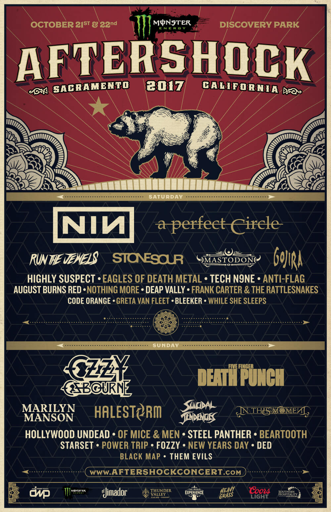
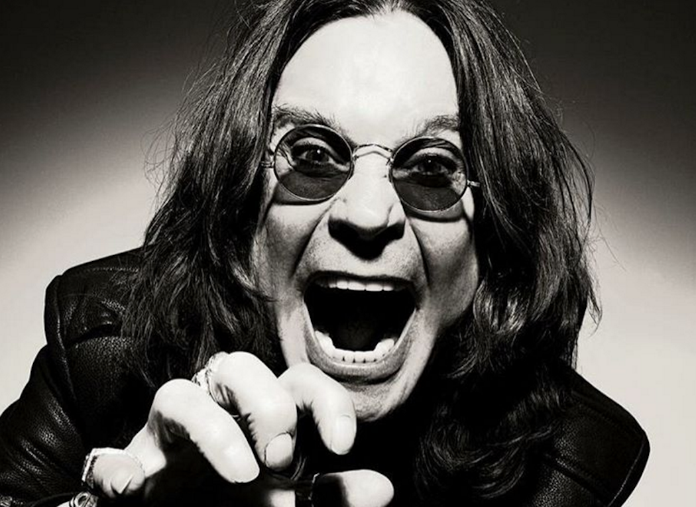
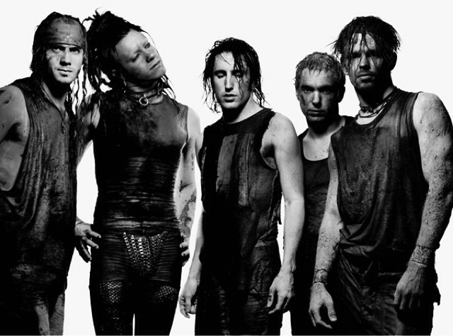
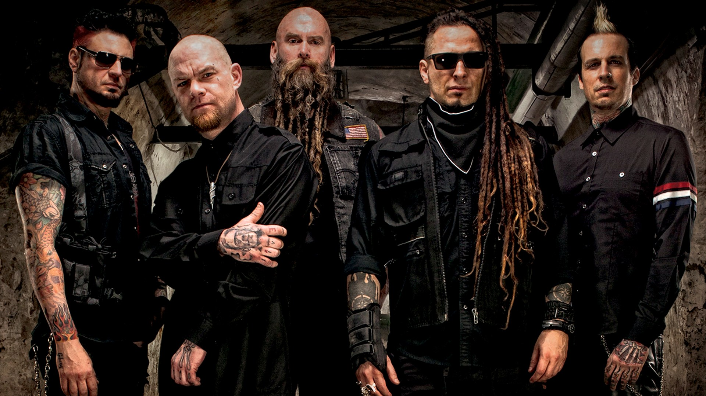

Festival Dates
| October 21, 2017 | |
|---|---|
| Sacrmento | CA | October 22, 2017 |
| Sacramento | CA |
2017 Line up

Nearly 50,000 heavy metal and rock music fans are expected to descend upon Discovery Park this month for the two-day Monster Energy Aftershock festival. That number makes Aftershock the largest annual music gathering in Sacramento. With an estimated half of attendees coming from out of state, the effect is wider reaching.
Main Attractions
|  | John Michael "Ozzy" Osbourne is an English singer, songwriter and actor. He rose to prominence during the 1970s as the lead vocalist of the heavy metal band Black Sabbath. He was fired from Black Sabbath in 1979 and went on to have a successful solo career, releasing 11 studio albums. |
 | Nine Inch Nails, commonly abbreviated as NIN (stylized as NIИ), is an American industrial band founded in 1988 by Trent Reznor in Cleveland, Ohio. The band released two influential albums during the 1990s—The Downward Spiral (1994) and The Fragile (1999)—and has record sales exceeding over 20 million copies worldwide, with 10 million sales certified in the United States alone. |
 | Five Finger Death Punch, often shortened to Five Finger or Death Punch, also abbreviated as 5FDP or FFDP, is an American heavy metal band from Las Vegas, Nevada. Formed in 2005, the band's name comes from the kung fu movie The Five Fingers of Death |